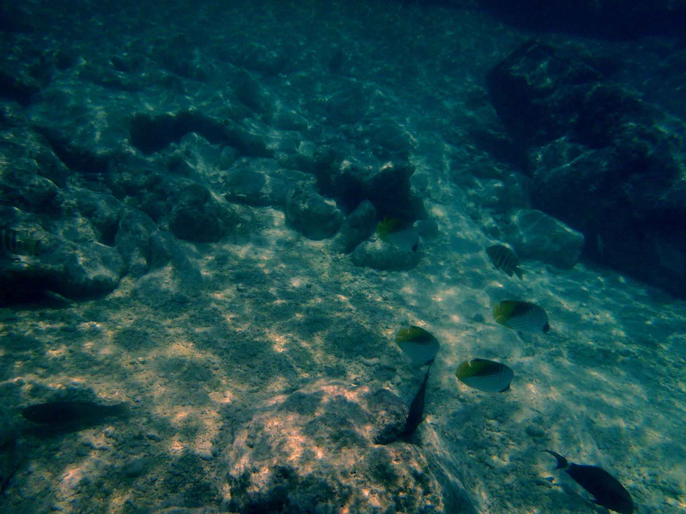
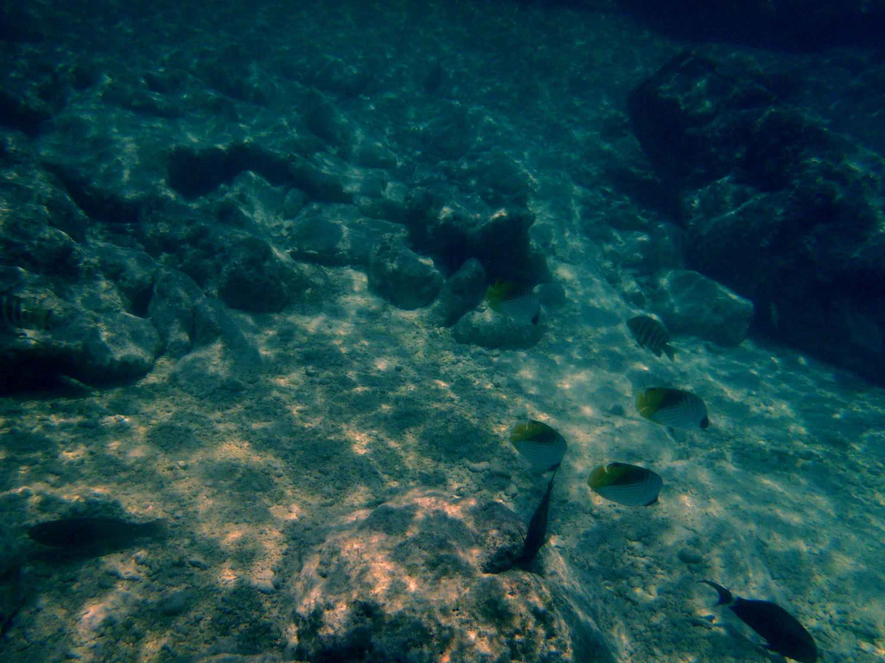

Et l'eau est transparente. Elle était propre aux Marquises, mais ici, elle est aussi transparente. On voit le fond, même avec 15 mètres d'eau. Et les poissons ! il y en a partout, de toutes les formes. et de toutes les couleurs. On remarque sur la photo que les couleurs de l'annexe correspondent à celles du paysage !
On va à terre, voir la Passe de Tiputa, par où on est entré. On est arrivé avec le flot, c'est le jusant maintenant. La première chose qu'on pense, c'est quelque chose comme "Mais comment est-ce qu'on a bien pu passer par là...". Avec le vent contre le courant, ça valdingue, c'est le moins qu'on puisse dire. Des grands dauphins jouent dans ces grosses vagues, il font des bonds de trois mètres au-dessus..., ils ont vraiment l'air de s'amuser là-dedans.
 L'endroit est petit, mais on a loué des vélos pour aller à Avatoru (environ 10 km), où
on veut jeter un coup d'oeil sur la passe d'Avatoru. La bonne nouvelle
c'est qu'il n'y a qu'une route, on devrait pouvoir ne pas se perdre !
L'endroit est petit, mais on a loué des vélos pour aller à Avatoru (environ 10 km), où
on veut jeter un coup d'oeil sur la passe d'Avatoru. La bonne nouvelle
c'est qu'il n'y a qu'une route, on devrait pouvoir ne pas se perdre !
On trouve aussi de quoi faire des courses en chemin (surtout de la bière). Corine a acheté des perles.
En plongeant - comme tous les jours - pour vérifier le mouillage, j'ai remarqué que l'ancre était coincée sous une patate de corail.
Quinze mètres, c'est un peu profond pour moi, pour aller la décoincer...
On a cependant réussi à regler ça, en utillisant le guindeau et le moteur, c'est bien. On a re-mouillé avec un orin au cul de l'ancre, et un pare-battage en flotteur à l'autre extrémité. Si elle se recoince, on aura comme ça la possibilité de la ramener sur le pont.
On a aussi déjeuné plusieurs fois dans des petits restaurants, qui sont nombreux. Ici, ils savent préparer le poisson ! La recette de poisson cru tahitien au lait de coco est celle que je préfère. Corine préfère le carpaccio, apparemment.
Il y en a un comme ça, où on est allé directement du bateau, à la voile avec l'annexe. C'est sûr que c'est bien d'aller déjeuner comme ça. Le propriétaire du restaurant a dit à Corine qu'il envisageait de construire un ponton pour que plus de gens puissent venir chez lui de cette manière. La plage à l'embouchure d'un hoa a fait notre affaire.
La plupart de ces petits restaurants sont dans des endroits comme ça, et il faut vraiment être concentré pour savoir ce qu'on a dans l'assiette..., la terrasse est une plage de corail, et le lagon s'étend de la gauche à la droite, aussi loin qu'on peut voir...
 
On a également pris le passeur pour aller voir le village de Tiputa, de l'autre côté de
la passe. Ils sont deux sur le bateau. Le chef, et un autre, qui s'occupe des amarres.
Celui-là est tatoué !.., jusque sur les paupières.

On a également pris le passeur pour aller voir le village de Tiputa, de l'autre côté de
la passe. Ils sont deux sur le bateau. Le chef, et un autre, qui s'occupe des amarres.
Celui-là est tatoué !.., jusque sur les paupières.
C'est petit Rangiroa, mais c'est assez grand pour qu'on puisse faire quelque chose de différent tous les jours.
Je me rappelle qu'à l'origine, je ne voulais pas m'arrêter a Rangiroa, parce que j'avais lu que c'est l'atoll le plus civilisé des Tuamotu. Et ben ça aurait été dommage de louper ça, c'est pas exactement St Tropez ! C'est encore assez isolé, c'est le moins qu'on puisse dire...
Le fait d'avoir un planning élastique en croisière réserve parfois de bonnes surprises. C'en est une.
Ça donne une toute autre allure à l'atoll.
Heureusement pour nous, ça n'est pas comme ça qu'on a vu l'atoll pour la première fois.